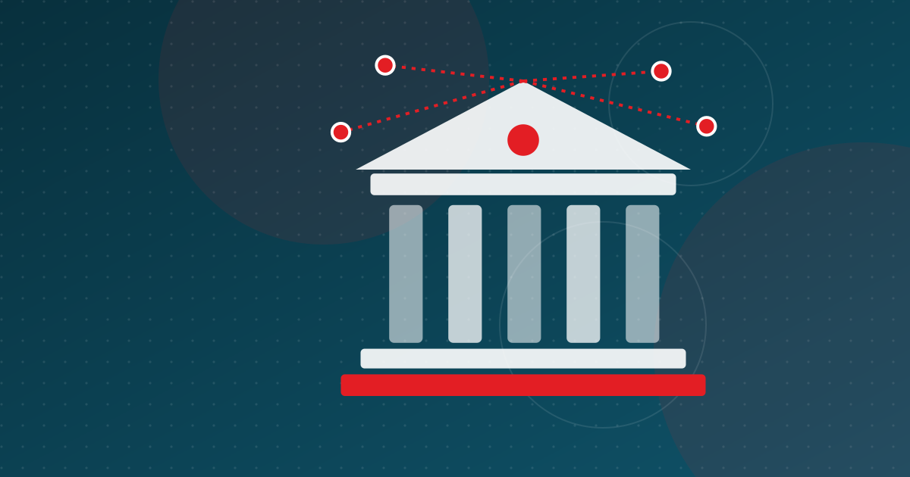

فتح حساب بنكي في تونس من الخارج: دليل التونسيين بالخارج 2026
دينار قابل للتحويل أم عملة أجنبية أم دينار عادي؟ ما يتيحه كل حساب للتونسيين المقيمين بالخارج وللأجانب، والوثائق المطلوبة، والبنوك التي تفتح الحسابات عن بعد، وكيف تحافظ على حقك في إعادة تحويل أموالك.

أبرز النقاط
- يمكن لغير المقيمين، ومنهم التونسيون المقيمون بالخارج منذ أكثر من سنتين، فتح ثلاثة أنواع من الحسابات: بالدينار العادي، وبالدينار القابل للتحويل، وبالعملة الأجنبية.
- حسابات الدينار القابل للتحويل والعملة الأجنبية هي التي يمكن تحويل أموالها إلى الخارج؛ أما أموال الحساب العادي بالدينار فتحتاج عمومًا إلى ترخيص من البنك المركزي.
- فوائد الإيداع بالدينار القابل للتحويل معفاة من الضريبة، مقابل حجز 20% على الإيداع بالدينار، حسب بنك تونس.
- احتفظ بما يثبت كل تحويل بالعملة الأجنبية أو تصريح ديواني: فهو ما يتيح لك إعادة تحويل أموالك، بما في ذلك ثمن بيع عقار.
يعيش أكثر من مليون تونسي في الخارج، ويحتفظ كثيرون منهم بحساب بنكي في تونس لمساعدة العائلة أو الادخار أو شراء عقار أو التحضير للعودة. ويحتاجه أيضًا الأجانب الذين يتعاملون مع تونس. لكن قواعد الصرف في تونس، المستندة إلى مجلة الصرف لسنة 1976، تجعل نوع الحساب حاسمًا: فهو الذي يحدّد إن كان بإمكانك إعادة تحويل المال إلى الخارج. يشرح هذا الدليل الخيارات المتاحة، ويعتمد على صفحات التجاري بنك وبنك تونس، وعلى أدلة نشرتها في 2026 Les Afriques وCFR Audit. تختلف القواعد والرسوم من بنك إلى آخر: تثبّت من بنكك قبل أي تحويل.
هل أنت مقيم أم غير مقيم؟
كل شيء يتوقف على وضعيتك إزاء قواعد الصرف، لا على جنسيتك. فالتونسي الذي يعيش ويعمل في الخارج منذ أكثر من سنتين يُعتبر عمومًا غير مقيم. فالتجاري بنك مثلًا يقترح على التونسيين المقيمين بالخارج منذ أكثر من سنتين حسابًا بالدينار وبالدينار القابل للتحويل وبالعملة الأجنبية، وعلى من أقاموا بالخارج أقل من سنتين حسابًا بالدينار وحسابًا بالدينار القابل للتحويل. والأجانب المقيمون خارج تونس هم أيضًا غير مقيمين.
أي حساب تفتح؟
| الحساب | العملة | هل يمكن تحويل الأموال إلى الخارج؟ | الاستعمال المعتاد |
|---|---|---|---|
| حساب بالدينار القابل للتحويل | الدينار، قابل للتحويل بحرية | نعم، إن كانت الأموال قادمة من الخارج | الإنفاق والادخار في تونس مع الاحتفاظ بحق إعادة التحويل |
| حساب بالعملة الأجنبية | اليورو والدولار والجنيه وغيرها | نعم | الاحتفاظ باليورو أو الدولار دون مخاطر الصرف |
| حساب عادي بالدينار | الدينار | عمومًا فقط بترخيص من البنك المركزي | الفواتير المحلية، مساعدة العائلة، المداخيل في تونس |
الحساب بالدينار القابل للتحويل هو الحساب الأساسي للجالية. يُغذّى بالأموال القادمة من الخارج (تحويلات أو أوراق نقدية أجنبية مصرّح بها) بعد تحويلها إلى الدينار، ويمكن استعماله في تونس أو إعادة تحويله إلى الخارج. ولا يمكن أن يكون مدينًا. وحسب بنك تونس، فإن فوائد الإيداع لأجل بالدينار القابل للتحويل معفاة كليًا من الضريبة، في حين يخضع الإيداع لأجل بالدينار لحجز بنسبة 20%.
الحساب بالعملة الأجنبية يحفظ أموالك باليورو أو الدولار أو عملة أخرى، بمنأى عن تقلبات الدينار (انظر سعر اليورو مقابل الدينار اليوم).
الحساب العادي بالدينار مفيد للمصاريف اليومية في تونس، لكن الأموال المودعة فيه، مثل معاليم كراء عقار في تونس أو ميراث، لا يمكن عمومًا تحويلها إلى الخارج دون ترخيص من البنك المركزي.
ومنذ 1 جانفي 2026، يتيح قانون المالية أيضًا للمقيمين فتح حساب بالعملة الأجنبية أو بالدينار القابل للتحويل دون ترخيص مسبق من البنك المركزي، وهو ما يساعد العائدين إلى البلاد.
ما هي الوثائق المطلوبة؟
تختلف القوائم من بنك إلى آخر، لكن توقّع ما يلي:
- جواز سفر ساري المفعول (وبالنسبة إلى التونسيين، بطاقة التعريف الوطنية أو البطاقة القنصلية)؛
- ما يثبت الإقامة بالخارج: بطاقة إقامة أو وثيقة هوية أجنبية أو شهادة سكنى حديثة؛
- أحيانًا ما يثبت الدخل أو النشاط بالخارج (عقد عمل، بطاقات الأجر)؛
- عند إيداع أوراق نقدية أجنبية لأول مرة، التصريح الديواني المؤشَّر عليه عند الوصول. ويجب التصريح بالعملة الأجنبية النقدية التي تبلغ قيمتها 20 000 دينار أو أكثر عند دخول تونس.
هل يمكن فتح حساب عن بعد من الخارج؟
نعم، وبشكل متزايد. يعلن التجاري بنك عن فتح حساب عن بعد بنسبة 100% للتونسيين المقيمين بالخارج. وتقترح بنوك أخرى، منها BIAT وبنك الأمان والبنك الوطني الفلاحي، فتح الحساب عن بعد أو بشكل رقمي جزئي، أو عبر تمثيليات في أوروبا، حسب أدلة 2026؛ ولا يزال بعضها يطلب وثائق معرّفًا بها في القنصلية أو زيارة فرع خلال الإقامة المقبلة. اسأل عن الآجال: تتحدث الأدلة عن بضعة أيام في الفرع وعن أسبوع إلى ثلاثة أسابيع عن بعد.
كيف تعيد تحويل أموالك من تونس؟
القاعدة العامة: الأموال التي دخلت بالعملة الأجنبية، مع ما يثبت ذلك، يمكنها الخروج.
- المدخرات: يمكن تحويل أموال الحساب بالدينار القابل للتحويل أو بالعملة الأجنبية إلى الخارج.
- عقار مُشترى بالعملة الأجنبية: يمكن إعادة تحويل ثمن البيع مع الوثائق المثبتة. ويمنح التصريح بالاستثمار عبر بطاقة الاستثمار لدى البنك المركزي ضمانًا للتحويل.
- عقار مُشترى بالدينار أو موروث: لا يوجد حق آلي في التحويل؛ يلزم ترخيص من البنك المركزي، تصفه CFR Audit بأنه صعب المنال. وعادة ما يُودع الثمن في حساب ذي استعمال مقيّد.
- النقود: يمكن لغير المقيمين إخراج العملة الأجنبية التي صرّحوا بها عند الدخول؛ احتفظ بوصولات الصرف والتصاريح.
ومن شأن إصلاح مجلة الصرف (مقترح القانون عدد 115/2025) أن يخفّف هذه القواعد، لكنه كان لا يزال أمام لجنة المالية في خريف 2026. اطّلع على متابعتنا لإصلاح مجلة الصرف.
نصائح قبل اختيار البنك
- افتح أولًا حسابًا بالدينار القابل للتحويل أو بالعملة الأجنبية، لا حسابًا بالدينار فقط، إن كنت قد ترغب يومًا في إعادة التحويل.
- أرسل المال بتحويل بنكي بدل حمله نقدًا، واحتفظ بكل وصل. ولإيجاد الطريقة الأقل كلفة، استعمل أداة مقارنة التحويلات ودليلنا حول أرخص طريقة لإرسال المال إلى تونس.
- قارن الرسوم الخاصة بمسك الحساب والبطاقة وتلقي التحويلات؛ فهي تختلف من بنك إلى آخر.
- تثبّت من الخدمات البنكية الرقمية. إدارة الحساب من الخارج أسهل بكثير مع تطبيق جيد؛ اطّلع على تقريرنا حول البنوك الرقمية في تونس.
أسئلة شائعة
هل يمكن فتح حساب بنكي تونسي من الخارج؟
نعم. تقترح عدة بنوك فتح الحساب عن بعد للتونسيين بالخارج، ويعلن التجاري بنك عن فتح كامل عبر الإنترنت. وتقبل بنوك أخرى وثائق معرّفًا بها في القنصلية أو تعمل عبر تمثيليات في أوروبا، ويشترط بعضها زيارة فرع.
ما هو الحساب بالدينار القابل للتحويل؟
حساب بالدينار لغير المقيمين يُغذّى بأموال قادمة من الخارج. ويبقى رصيده قابلًا للتحويل: يمكن إنفاقه في تونس أو إعادة تحويله إلى الخارج. وفوائد الإيداع لأجل بالدينار القابل للتحويل معفاة من الضريبة حسب بنك تونس.
هل يمكن تحويل أموال حسابي بالدينار إلى الخارج؟
عمومًا لا، دون ترخيص من البنك المركزي. وحدها أموال الحسابات بالدينار القابل للتحويل أو بالعملة الأجنبية، أو عائدات الاستثمارات المنجزة بعملة أجنبية مصرّح بها، يمكن إعادة تحويلها بحرية مع الوثائق المثبتة.
من يُعتبر غير مقيم في تونس؟
الأجانب المقيمون بالخارج والتونسيون الذين يعيشون ويعملون في الخارج منذ أكثر من سنتين يُعتبرون عمومًا غير مقيمين في نظر قواعد الصرف.
المصادر
- Ouverture de compte en ligne (Tunisiens résidents à l'étranger) — Attijari bank Tunisie
- Compte à terme TRE — Banque de Tunisie
- Compte bancaire Tunisie pour la diaspora : guide 2026 — Les Afriques (Sept. 2026)
- Rapatrier son argent de Tunisie : les règles 2026 pour TRE — CFR Audit (Sept. 2026)
- Ouvrir un compte bancaire en Tunisie : guide complet 2026 — tauxdechange.tn (Mar. 2026)
هذا المقال لأغراض إعلامية فقط ولا يُعدّ استشارة قانونية أو مالية أو استثمارية. الأرقام مؤرخة وموثّقة المصادر؛ يُرجى الرجوع إلى أحدث المنشورات الرسمية قبل اتخاذ أي قرار.